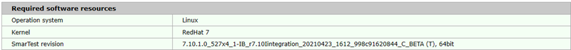
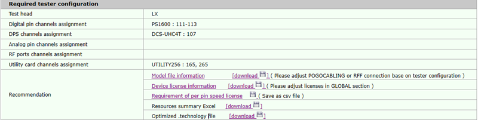
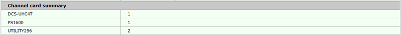
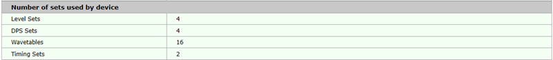
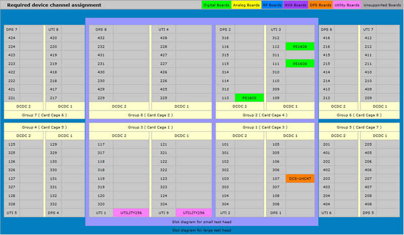

Report for the required resources
This report summarizes the minimum hardware resources a test program requires.
Required software resources
The operation system of the workstation and the SmarTest revision you are using.

Required tester configuration
This table shows the test head, digital cards, DPS cards, analog cards, RF cards, and utility blocks the test program requires to run.

- Test head
- The recommended test head type.
- Digital pin channels assignment
- The digital pin channels and the card in each channel.
- DPS channels assignment
- The DPS channels and the board they tested.
- Analog pin channels assignment
- The analog pin channels and the board they tested.
- RF ports channels assignment
- The RF ports channels and the board they tested.
- Utility card channels assignment
- The utility card channels and the board they tested.
- Recommendation
-
This section lists the recommended files automatically generated by the test program resource profiler. You can choose to modify the configuration of the tester based on the minimum resources recommended in the following files:
- Model file information: The minimum model required by the test program.
Click Model file information to see the required model file page.
Click Download to open the recommended model file. You can edit the pogo cabling and RFF connection based on the tester configuration. - Device license information: The minimum device licenses required by the test
program.
Click Device license information to see the required device license page.
Click Download to open the recommended license file. You can edit the licenses in the GLOBAL section.If the report is generated in SmarTest offline mode, there is no FPGA information in this file.
- Requirement of per-pin speed license: The minimum per-pin speed licenses required to
execute the test program.
Click Requirement of per pin speed license to see the per-pin license requirement page.
Click the save button to open the license file.
to open the license file.This file is generated only when you have selected Generate detailed report for per-pin speed requirement on the Preference page.
- Resources summary Excel: The report listing the required resources is saved as an Excel file. Click Download to open it.
- Optimized .technology file: The minimum
sets
of setup required by the
device.
Click Download to open the technology file.
The model file, device license file, resources summary file, and technology file are located in /tmp/.vda/user_name/TPR/report/files/. The per-pin speed license information file is located in /tmp/.vda/user_name/TPR/report/report/.
The license information and the technology file are analyzed and summarized by the test program resource profiler based on the analysis by Testflow Analyzer Tool (TAT). If the TAT is not available, an error message is displayed, and the license and technology files are not generated.
- Model file information: The minimum model required by the test program.
Channel card summary
This section summarizes the number of channel cards that are used in the test program.

Number of sets used by device
This section summarizes the minimum number of sets of setup information used by the device.

Required device channel assignment
This physical slot diagram shows the locations of the pogo blocks used by the test.
The cards are color-coded. There is a legend at the top right of the diagram.

MCA, MCB, MCC and MCE cards each occupies two pogo blocks but are shown in only one of them. For example, an MCB card occupies pogo blocks 231 and 431, but only one pogo block is shown in the report.